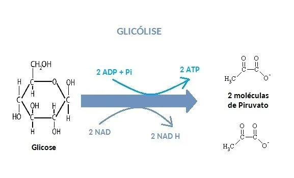
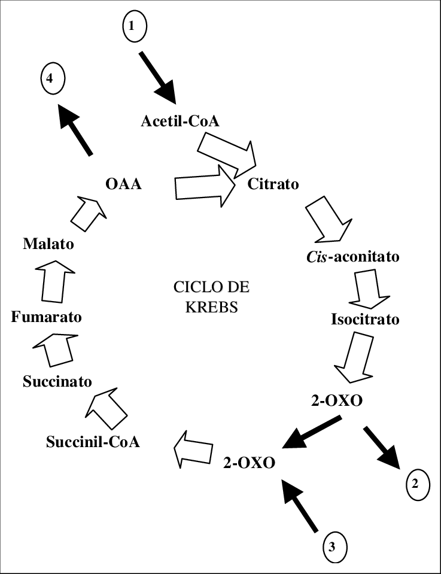
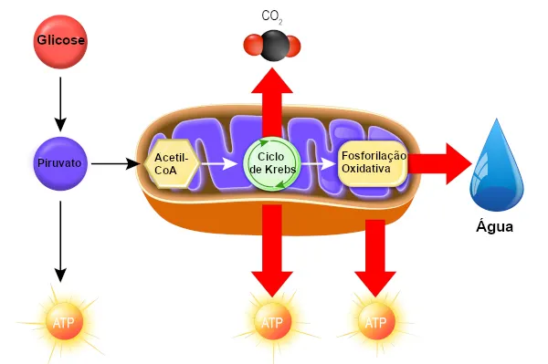

Funcionamento
A respiração celular ocorre em três etapas principais:
Glicólise: Acontece no citoplasma, onde a glicose é quebrada em piruvato.
Ciclo de Krebs: O piruvato entra na mitocôndria e é convertido em CO2, gerando NADH e FADH2.
Fosforilação Oxidativa: Ocorre nas cristas mitocondriais, onde os elétrons do NADH e FADH2 passam pela cadeia de transporte de elétrons, produzindo ATP e água.
A mitocôndria também possui seu próprio DNA, o que suporta a teoria da endossimbiose, sugerindo que elas evoluíram de bactérias ancestrais que foram englobadas por células primitivas.